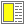
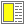

;start here
(define (document ttl body-form)
(html html-props
(head
(meta meta-props) (title ttl))
(body
body-form)))
(define validate-html? #t)
(define check-html-attributes? #t)
(define transliterate-character-data? #t)
(define check-element-prohibitions? #t)
; Write a WWW page with title and body to f.html, provided
; that this file is located in f.laml. You must write this buffer
; to a file, such as f.laml, before you LAML process it.
(write-html '(raw prolog)
(document
"TITLE"
"BODY"
)
)
;end here 


 
